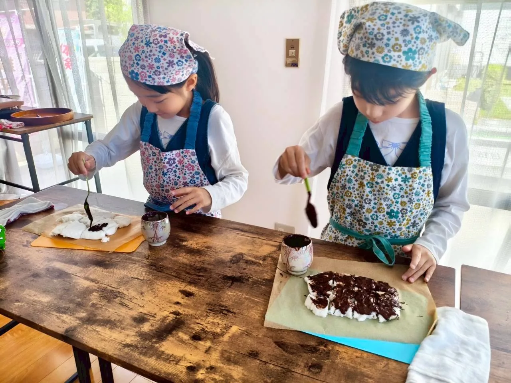
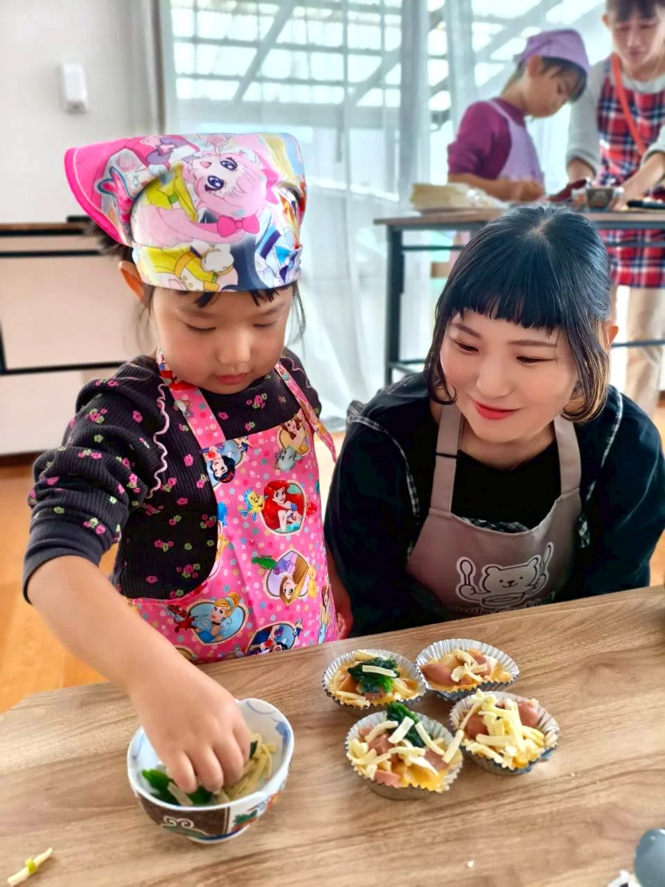
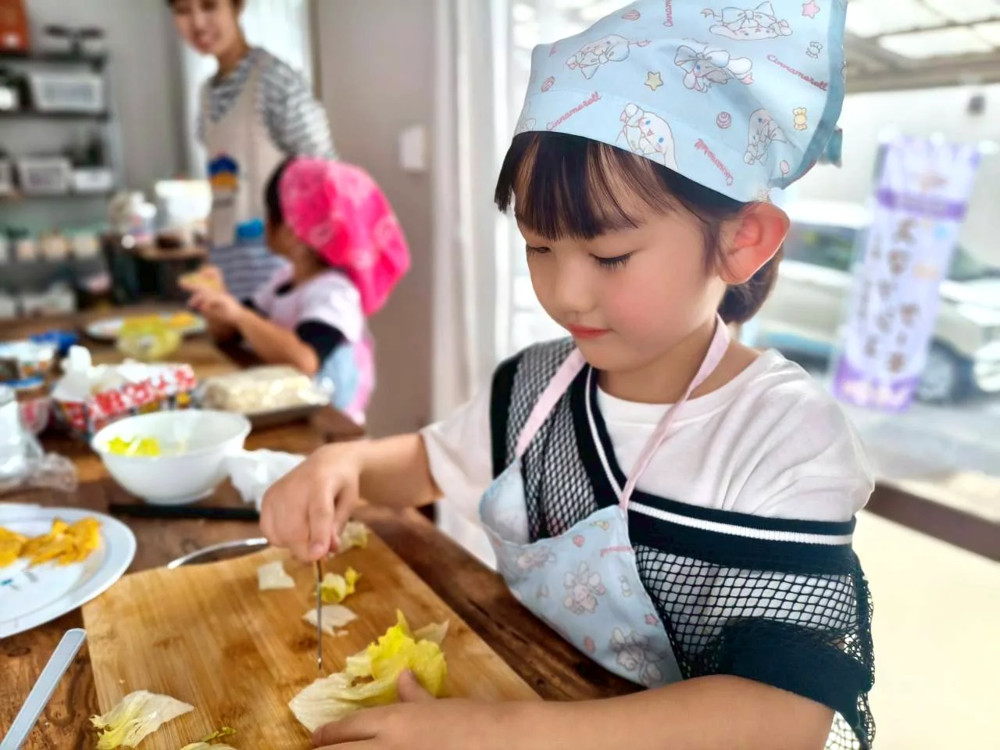
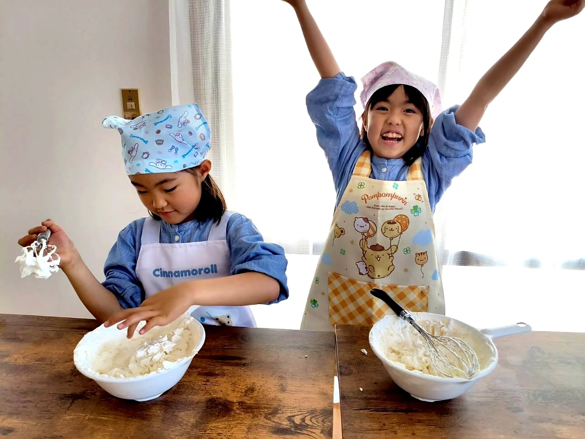
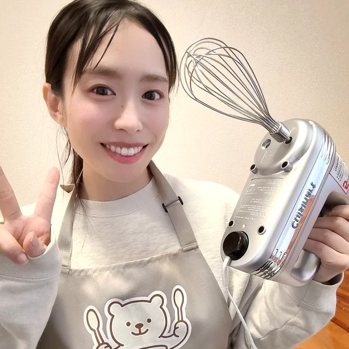
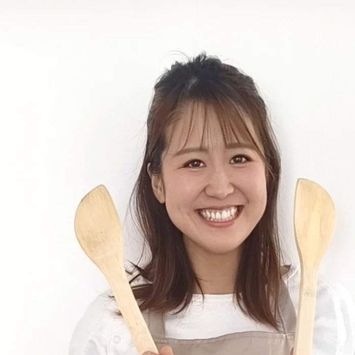

ここでは、その「やりたい」を全部受け取ります。
料理を通して、子どもが自分で見て、考えて、決める時間を。
安全は大人が整えながら、子どもが主役になれる場所です。
迷っている方は体験から。レッスンが決まっている方はそのままどうぞ。

🐻 楽しく、本気で。




体験は、年齢と参加スタイルで2種類あります。
親子体験はサンドイッチ作り。小学生体験は通常レッスンの空き枠でご案内します。
親子体験の開催時間
親子体験は、毎月第1日曜日または土曜日に開催しています。兄弟児追加は＋1,000円/人、追加食材は＋500円/1人分です。2歳半ごろのお子さんは、LINEでご相談ください。
小学生体験は、通常の小学生レッスン開催日に空席がある場合のみご案内します。通常4,500円のレッスンを、初回体験は一律2,500円/人でご参加いただけます。お子さま1人で参加し、親子2人1組分を作って持ち帰ります。
親子レッスンも小学生レッスンも、毎月共通のテーマで開催。
きょうだいで別々のレッスンでも、おうちで同じ話ができます。
家ではつい口を出してしまうのに、ここでは先生が子どものペースを大切にしてくれて、私も安心して見守れました。「できた！」の顔を近くで見られて嬉しかったです。
レッスンで作ったものを持ち帰ると、家族に「これ作ったんだよ！」と誇らしそうに話していました。料理だけでなく、自分でやってみる自信につながっていると感じます。
人見知りで最初は心配でしたが、無理に急かされることなく、その子のタイミングを待ってくれました。帰る頃には「また行きたい」と言っていて、親の私もほっとしました。
上手に作ることより、自分で選んで、自分でやってみること。
うまくいかなかった時も「次どうしよう？」を一緒に考えること。誰かのために作れること。
その一つひとつが、子どもの「できた！」と自信になっていきます。
目指すのは「比べられない習い事」。料理で育てるのは、自分で決める力。
料理の腕前を競う教室でも、完成度を採点する教室でもありません。
レシピどおりに作れることより、「自分で決めて、やってみた」を大切にしています。
🌱 家では時間がなくて、キッチンに立たせてあげられないママ。
🌱 失敗も汚れも、経験のうちだと思いたいママ。
🌱 比べられるのではなく、その子のペースで育ってほしいと願うママ。
シンプルです。迷ったときは、途中でLINE相談もできます。
質問があれば、公式LINEにいつでもどうぞ。
不安なく来られるよう、事前にしっかりご案内しています。
体験レッスンで雰囲気を見てみたい方も、
参加したいレッスンが決まっている方も。
今の気持ちに合う方からお選びいただけます。
「うちの子でも大丈夫かな？」という相談だけでも大丈夫です。LINEでは毎週月曜日に、最新の空き枠をお知らせしています。